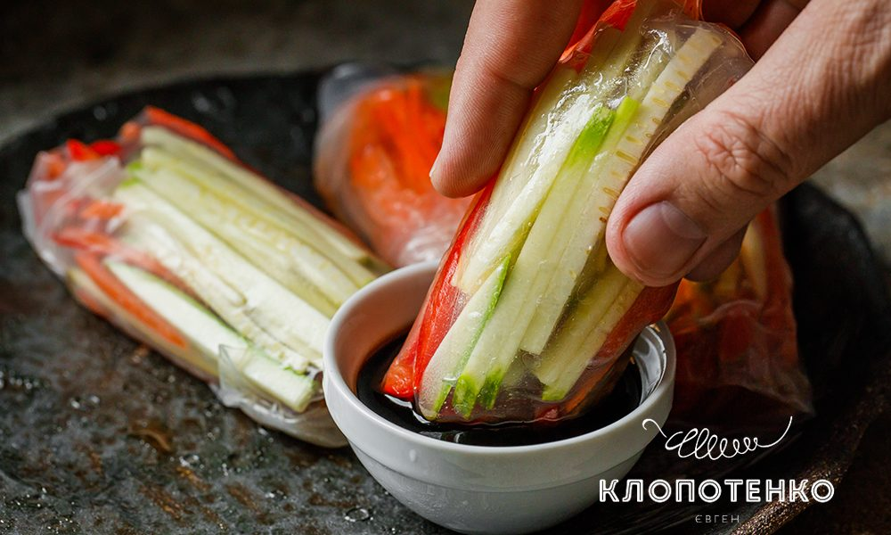
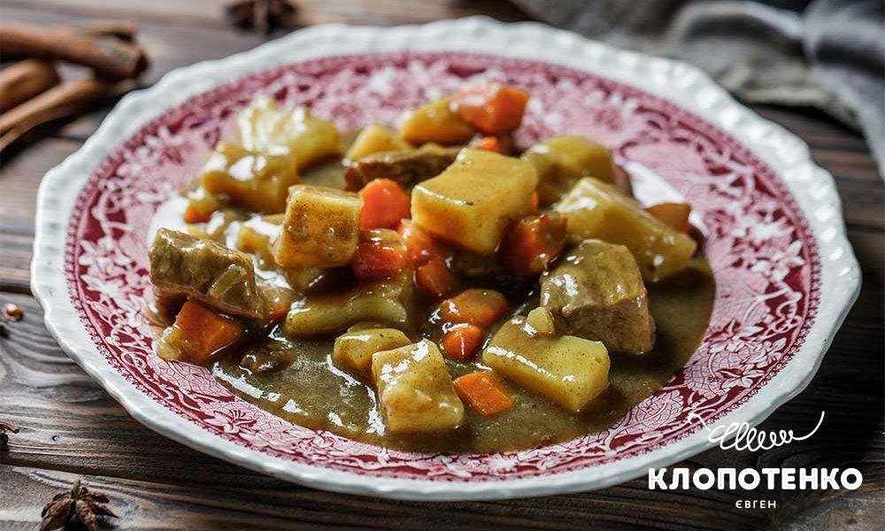
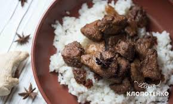
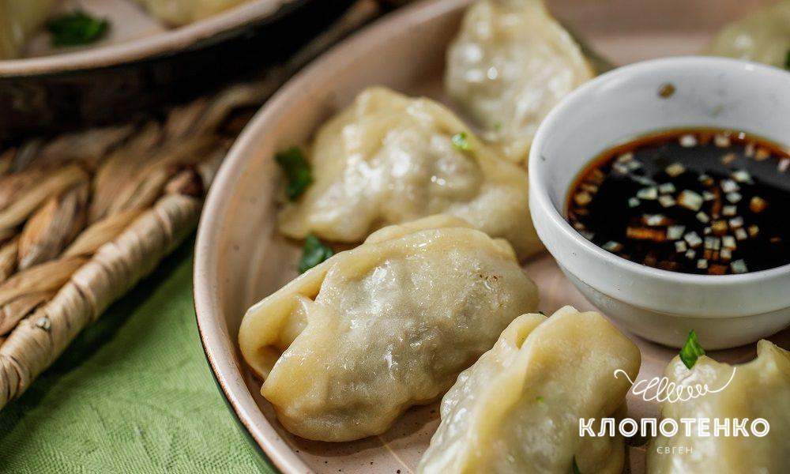

МІНІМУМ КАЛОРІЙ – БАГАТО СМАКУ! АЗІЙСЬКІ СПРІНГ РОЛИ З ТОФУ І ОВОЧАМИ
20 хвилин
2
легко
ПОРАДИ З ПРИГОТУВАННЯ СПРІНГ РОЛІВ
Рецепт дуже простий, тож багато порад не знадобиться. Головний секрет роботи з рисовим папером – працювати з ним треба дуже швидко, аби він не встиг затвердіти. Рисовий папір і соус “світ чилі” шукайте в секції, де виставлені товари для приготування суші. Соєвий сир тофу продається в герметичному пакуванні, заповненому водою. Воду треба злити, а тофу трохи віджати від зайвої вологи. До спринг ролів гарно пасують соєвий, унагі, устричний соуси, а ще бальзамічний соус-крем.

СВИНИНА ТА ОВОЧІ: ПРОСТИЙ РЕЦЕПТ ДОМАШНЬОЇ ПЕЧЕНІ
50 хвилин
4
помірно
ТОНКОЩІ ПРИГОТУВАННЯ ДОМАШНЬОЇ ПЕЧЕНІ ЗІ СВИНИНИ
Для печені по-домашньому можна використовувати будь-яку частину свинини – головне, щоб була без кісток і, бажано, без сала чи принаймні з мінімальною його кількістю. Якщо ви збираєтеся використовувати заморожене м’ясо, краще звечора чи за 8-10 годин перекладіть його з морозилки в холодильник. Так всі продукти розмерзаються найбільш коректним способом, адже роблять це поступово. Різкі перепади температур сприяють швидкому псуванню. Перед приготуванням печені зі свинини ретельно зачистьте м’ясо від зайвого жиру та плівок, адже після термообробки вони будуть надто жорсткими. І я раджу різати його невеличкими шматочками, щоб швидше і рівномірніше приготувалося. Щоб інгредієнти не прилипали до каструлі, обирайте посуд із товстим дномю

СПРАВЖНІ СХІДНІ МАНТИ – РЕЦЕПТ ЄВГЕНА КЛОПОТЕНКА
50 хвилин
4
помірно
РІЗНОВИДИ МАНТІВ
Достеменно невідомо, хто саме винайшов манти, адже навіть назва страви в усіх країнах, де вона готується, подібна. Така поширеність призвела до появи чималої кількості локальних відмінностей у приготуванні страви. Наприклад, у Казахстані манти традиційно готують з бараниною, часом додаючи гарбуз, в узбецькій і киргизькій кухні баранина інколи поступається яловичині, а до м’яса додається картопля і сало. Відрізняється в різних країнах і типовий соус до мантів. У Центральній Азії типовим є кисломолочний соус на основі йогурту, в Китаї манти радше подаватимуть із соєвим соусом. Мені більше подобається більш азійський смак, тому я обираю соєвий соус і додаю до нього дрібно нарізану зелену цибулю. Манти ж робитимемо з яловичиною і цибулею – такі присутні практично у всіх країнах, для яких ця страва традиційна.

ПРЯНА ТА КАРАМЕЛІЗОВАНА. РЕЦЕПТ СВИНИНИ ПО-КИТАЙСЬКИ
1 година
4
легко